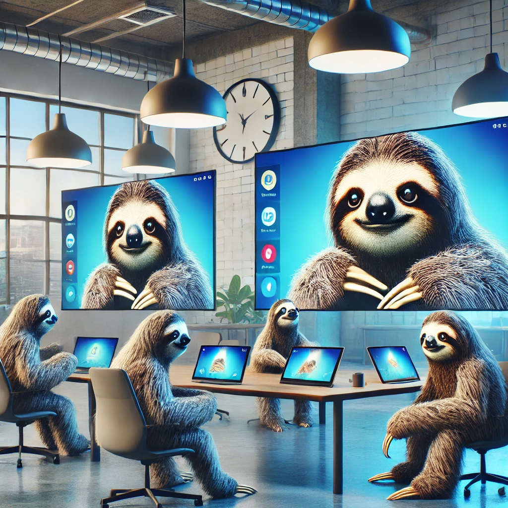

Screen Mirroring (Ditto by Air Squirrels)
Ditto® by Air Squirrels is a powerful wireless screen mirroring solution designed for seamless collaboration across devices. Whether you’re in a classroom or a boardroom, Ditto allows users to share screens from laptops, tablets, and smartphones onto a single display.
- Wireless mirroring across platforms (Windows, Mac, iOS, Android)
- High-quality video and audio streaming
- Collaboration features for real-time interaction
- Security and privacy controls to ensure safe sharing
Whether it’s for education, corporate training, or large-scale presentations, Ditto offers a reliable, simple solution for screen sharing that enhances productivity and collaboration.